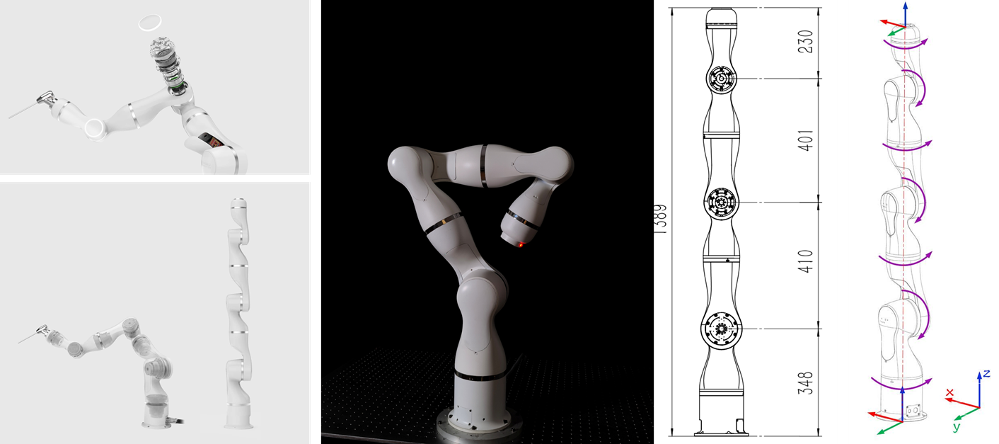

TALON: 7-DoF Cobot
- Collaborator: Yunxiang Jiang
- Contract Manufacturing: Landau Robotics. Ltd.
TALON: 7 DoF Cobot
TALON is a 7-DoF collaborative robot arm designed for research and industrial applications. It features a lightweight design, high precision, and advanced safety features, making it suitable for human-robot interaction tasks. The robot is equipped with torque sensors each joint and force-torque sensor at end effector. TALON is controlled by ROCOS Controller which has multi-level APIs for easy programming and integration with other systems.

Complicant Control
TALON is equipped with torque sensor at each joint, it can realize complicant controls such as compliant dragging and collision detection.
Dual Arm Control
Due to the open architecture of ROCOS, it is easy to control multiple robots by one controller. Here we show a demo of two TALON arm control by one ROCOS controller, achieving synchronization of robots' movement.

Video Demo
The following video shows the TALON cobot movement controlled by the ROCOS controller. (First-generation without industrial design appearance)